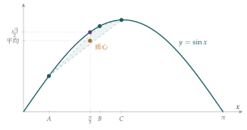

STEP II 2007，第 7 题
继续之前，请先阅读题目（原题为英文）。题目载于 STEP Support Programme 的题目资料库： step.maths.org/questions/07-s2-q7
引子
在 第 3.2 节 中，我们用一个巧妙的归纳法（induction）证明了 AM–GM 不等式。在这一节，它只需一行便水到渠成，因为它不过是某个更宏大的结果的特殊情形。这个更宏大的东西就是凹性（concavity）：向下弯的曲线所具有的形状，就像山顶一样。关于这类曲线，有一个简单的几何事实：曲线位于它的弦（chord）之上。单凭这一点，竟然可以证明范围广得惊人的各种不等式（inequality），从关于三角形的一个结果，到 AM–GM 不等式，以至概率（probability）、信息论（information theory）和经济学中的不等式。
到了大学，这个想法会发展成凸性（convexity），它是现代数学中最能贯通各个领域的重要主题之一。有些学科，例如凸优化（convex optimisation），整个就是建基于它之上。
动笔之前
画一条向下弯的曲线，例如 \((0, \pi)\) 上的 \(y = \sin x\)。在曲线上标出两点，并用直线把它们连起来。这条弦在曲线之上还是之下？
在曲线之下。对于凹曲线，每一条弦在两个端点之间都位于曲线之下。两个函数值的平均，就是弦的中点的高度；而函数在平均值处的取值，就是该中点正上方的曲线高度。因此，“弦在曲线之下”正正就是 \(n = 2\) 时的琴生不等式（Jensen’s inequality）： \[\frac{\mathrm{f}(x_1) + \mathrm{f}(x_2)}{2} \leq \mathrm{f}\left( \frac{x_1 + x_2}{2} \right).\] 若有 \(n\) 个点，则各点 \((x_k, \mathrm{f}(x_k))\) 的平均就是它们的质心（centre of mass），它位于曲线下方的区域之内，所以同样在曲线之下（图 3.3.1）。
逐步解题
阶段 1 验证凹性
当 \(0 < x < \pi\) 时，\(\frac{\mathrm{d}^2}{\mathrm{d}x^2}\sin x = -\sin x < 0\)；当 \(x > 0\) 时，\(\frac{\mathrm{d}^2}{\mathrm{d}x^2}\ln x = -\frac{1}{x^2} < 0\)。■
阶段 2 三角形
应该用哪个函数、取哪些点？它们的平均是甚么？三角形的各个角是否都落在函数呈凹性的区间之内？
取 \(\mathrm{f}(x) = \sin x\) 和三个点 \(A, B, C\)。每个角都严格介乎 \(0\) 与 \(\pi\) 之间，而 \(\sin\) 在这个区间上是凹的，它们的平均是 \(\frac{A + B + C}{3} = \frac{\pi}{3}\)。由琴生不等式得 \[\frac{\sin A + \sin B + \sin C}{3} \leq \sin\frac{\pi}{3} = \frac{\sqrt3}{2},\] 所以 \(\sin A + \sin B + \sin C \leq \frac{3\sqrt3}{2}\)，而等号恰好在等边三角形（equilateral triangle）时成立。■

阶段 3 一行证明 AM–GM
AM–GM 不等式比较的是一个积与一个和。哪个凹函数能把积变成和？
对数（logarithm）。把琴生不等式应用于 \(\mathrm{f} = \ln\) 和正数 \(t_1, \ldots, t_n\)： \[\frac{\ln t_1 + \cdots + \ln t_n}{n} \leq \ln\left( \frac{t_1 + \cdots + t_n}{n} \right).\] 左边是 \(\ln\bigl(\sqrt[n]{t_1 \cdots t_n}\bigr)\)。由于 \(\ln\) 是递增函数，我们可以把两边的对数同时去掉，这就是 AM–GM 不等式。等号恰好在所有 \(t_k\) 都相等时成立。■
阶段 4 运用 AM–GM
在 (a) 中，左边是四项之和，右边含有三个变量的积。你应该对多少项应用 AM–GM 不等式？那个 \(16\) 又为何有用？
对四个正数 \(x^4\)、\(y^4\)、\(z^4\)、\(16\) 应用 AM–GM 不等式： \[\frac{x^4 + y^4 + z^4 + 16}{4} \geq \sqrt[4]{16\,x^4 y^4 z^4} = 2xyz.\] 两边乘以 \(4\)，得 \(x^4 + y^4 + z^4 + 16 \geq 8xyz\)。■
现在求 \(x^5 + y^5 + z^5 - 5xyz\) 的最小值。（提示：你想要的是 \(x^5y^5z^5\) 的五次方根，所以需要五个数。另外两个数应该是甚么？）
对 \(x^5, y^5, z^5, 1, 1\) 应用 AM–GM 不等式： \[\frac{x^5 + y^5 + z^5 + 1 + 1}{5} \geq \sqrt[5]{x^5y^5z^5} = xyz,\] 所以 \(x^5 + y^5 + z^5 - 5xyz \geq -2\)。等号在 \(x^5 = y^5 = z^5 = 1\) 时成立，即 \(x = y = z = 1\)，这时该式的值为 \(3 - 5 = -2\)。因此最小值是 \(-2\)。■
留意等号成立的条件在这里身兼两职：它说明这个界确实可以取到，所以 \(-2\) 是最小值，而不仅仅是一个下界（lower bound）。
回顾
一个想法，多个不等式。关于凹曲线的一个几何事实，既给出了一个关于三角形的结果，又给出了 AM–GM 不等式，而所需的计算不过是验证一个二阶导数（second derivative）。
选择函数和点。运用琴生不等式，就是要决定把它应用于哪个函数、取哪些点。对数能把积变成和，是常用之选。
补项以配合题目。在 (b) 中，补上两个 \(1\) 令 AM–GM 不等式切合题目，正如在 第 3.2 节 中补上平均值一样。
背后的数学
在大学里，凸函数（convex function，即把凹函数上下倒转）的标准定义完全不涉及导数：若 \[\mathrm{f}\bigl(t x_1 + (1-t)x_2\bigr) \leq t\,\mathrm{f}(x_1) + (1-t)\,\mathrm{f}(x_2) \qquad\text{对所有 } x_1, x_2 \text{ 及 } 0 \leq t \leq 1,\] 则称 \(\mathrm{f}\) 为凸函数，这正正是说弦位于曲线之上。这个定义对不可微（not differentiable）的函数（例如 \(|x|\)）以及多元函数同样适用。丹麦工程师兼数学家琴生（Johan Jensen）在 1906 年提出了以他命名的不等式，使凸函数成为一门独立的学问。
无处不在的凸性
凸性在数学及其应用中随处可见。
概率。琴生不等式指出，对于凹函数 \(\mathrm{f}\) 和任意随机变量（random variable）\(X\)，有 \(\mathrm{E}[\mathrm{f}(X)] \leq \mathrm{f}(\mathrm{E}[X])\)。在经济学中，若以 \(\mathrm{f}\) 为一个凹的“效用”（utility）函数，这就解释了为何人们宁愿稳拿 £100，也不愿参与一场各有一半机会得到 £0 或 £200 的赌局，亦解释了为何会有保险。
信息论。均匀分布（uniform distribution）使熵（entropy）达到最大，这个结果是数据压缩的基础，而它的证明就是 \(\ln\) 的琴生不等式。
优化。凸函数除了全局最小值之外，再没有其他局部极小值（local minima），所以“一直往下坡走”总能找到最佳答案。这就是凸优化问题能够有效率地求解的原因，也是人们花那么多工夫把问题改写成凸形式的原因。
在 第 3.4 节 中，我们会看到凸性的另一面：函数与其反函数（inverse）之间的一种几何对偶（duality）。
思维技巧
当几个结果的证明相似时，要找出它们背后的同一个原理。然后把这个原理证明一次，再多次应用。
AM–GM 不等式、关于正弦的三角形不等式，以及许多其他结果，全都是“凹曲线位于它的弦之上”的实例。认出这个原理，就能把一堆零散的技巧变成一套方法。
延伸练习
定义。STEP II 2018，第 2 题 的第 (i) 及 (ii) 部分由上面方框中以弦刻划凹性的定义出发，逐步建立三个点的琴生不等式。
正弦之积。试做 STEP II 2018，第 2 题 的第 (iii) 部分。
锐角三角形。证明 \(\tan x\) 在 \((0, \frac\pi2)\) 上是凸的，并由此推出在锐角三角形（acute-angled triangle）中，\(\tan A + \tan B + \tan C \geq 3\sqrt3\)。
幂平均。证明 \(x^2\) 是凸的，并由此推出 \(\left(\frac{a_1 + \cdots + a_n}{n}\right)^2 \leq \frac{a_1^2 + \cdots + a_n^2}{n}\)。试把这个结果诠释为关于一组数的方差（variance）的命题。
延伸阅读
J. Michael Steele, The Cauchy–Schwarz Master Class（Cambridge University Press）。第 6 章讲述凸性和琴生不等式。
Claudi Alsina & Roger Nelsen, When Less Is More: Visualizing Basic Inequalities（Mathematical Association of America）。以图形证明不等式，当中不少用到凸性。
Stephen Boyd & Lieven Vandenberghe, Convex Optimization（Cambridge University Press）。一部现代经典，可在网上免费阅读；开首几章说明凸性在实际应用中为何重要。